L'oradel gelato
01 — L'ora del gelato
Il tempo,al gustodi Firenze.
Ispirato ai carretti toscani del gelato. Un luogo dove fermarsi, e prendersi il proprio tempo.
02 — Il laboratorio
Mantecatoogni giorno.
Ingredienti di stagione, scelti da piccoli produttori locali. Per questo i gusti cambiano ogni giorno.
03 — L'affogato
Fiordilatte& espresso.
Due gesti semplici, il tempo giusto per incontrarsi.
04 — La stagione
La stagionenel cono.
Frutta, frutta secca e materie prime selezionate seguono il ritmo naturale delle stagioni.
Scorri
FRAME 001 / 192
01 / 04
L'ora del gelato
Il gustodel giorno.
Il menu nasce e cambia in laboratorio. Le disponibilità possono variare ogni giorno.
Fior di LatteNocciola VintagePistacchio SicilianoLimone di SorrentoCrema BarroccinoCannolo Siciliano
Mango e Passion FruitCantucci & Vin SantoStracciatellaCaramello al CaffèFichiBacio Proibito
Collezione · Barroccino
Sei gusti,sei manifesti.
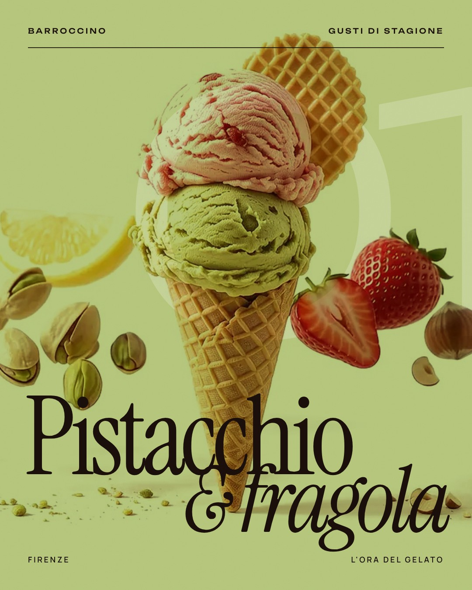
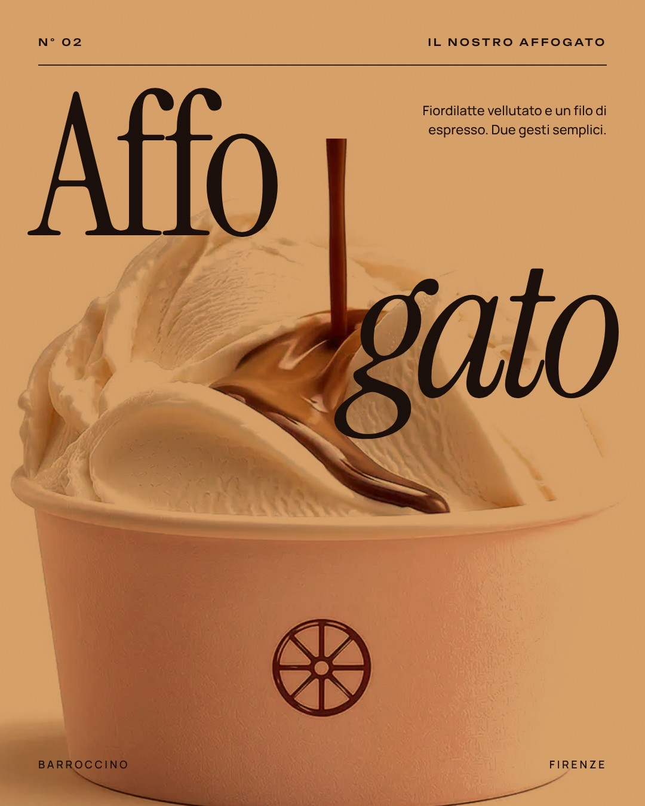
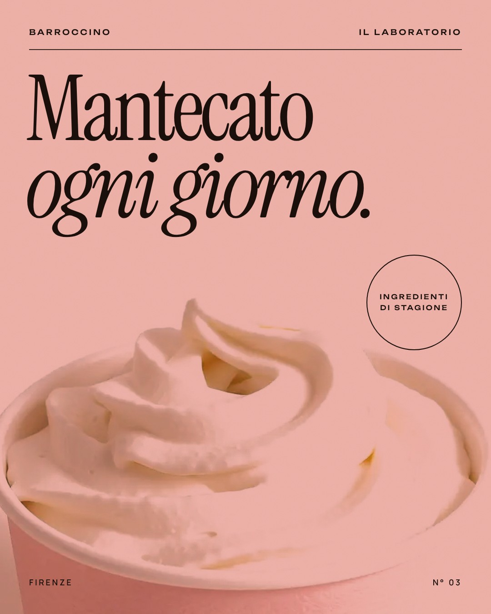
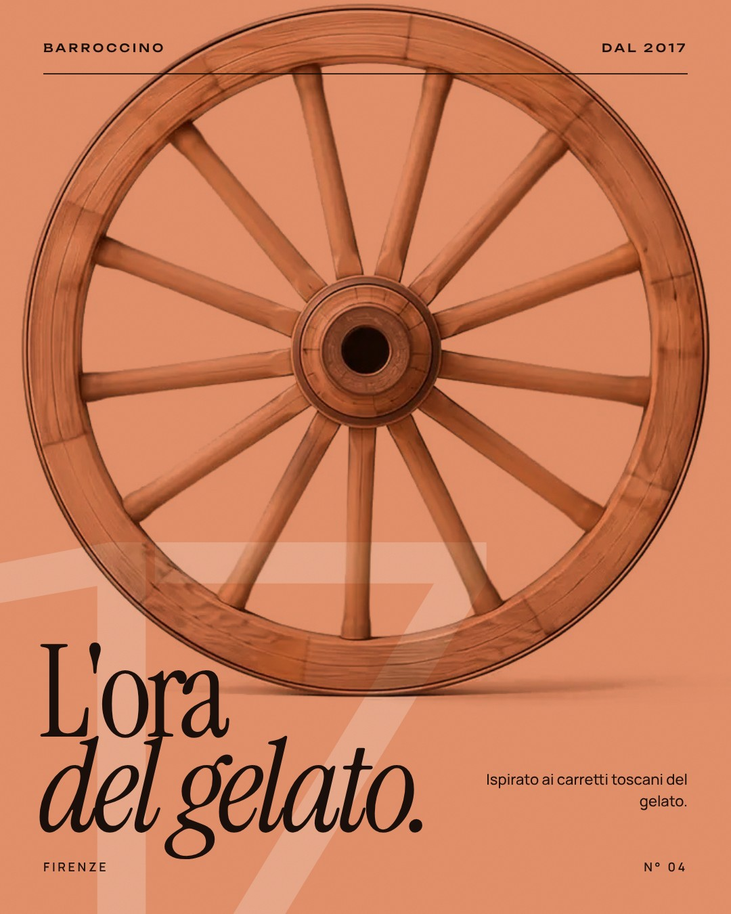
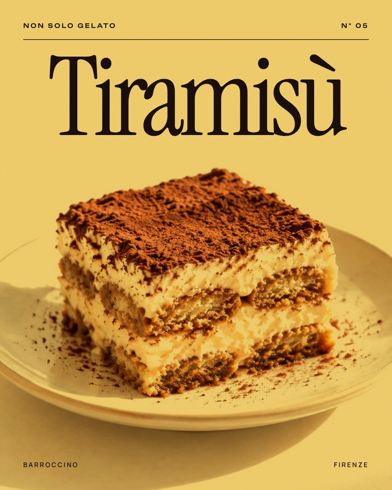
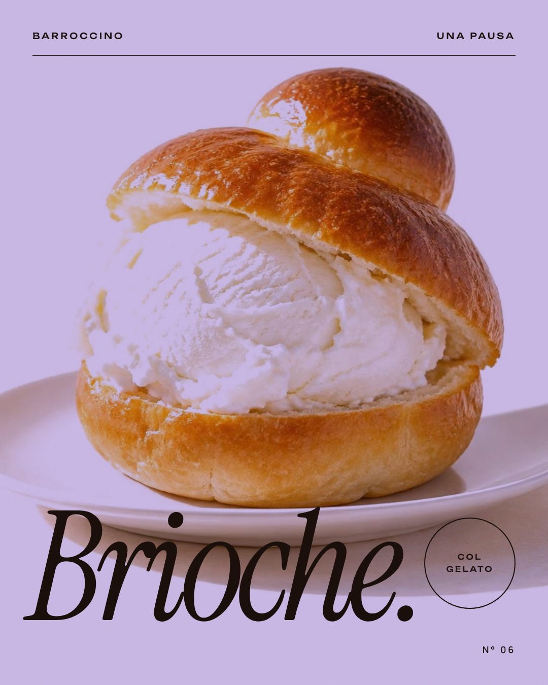
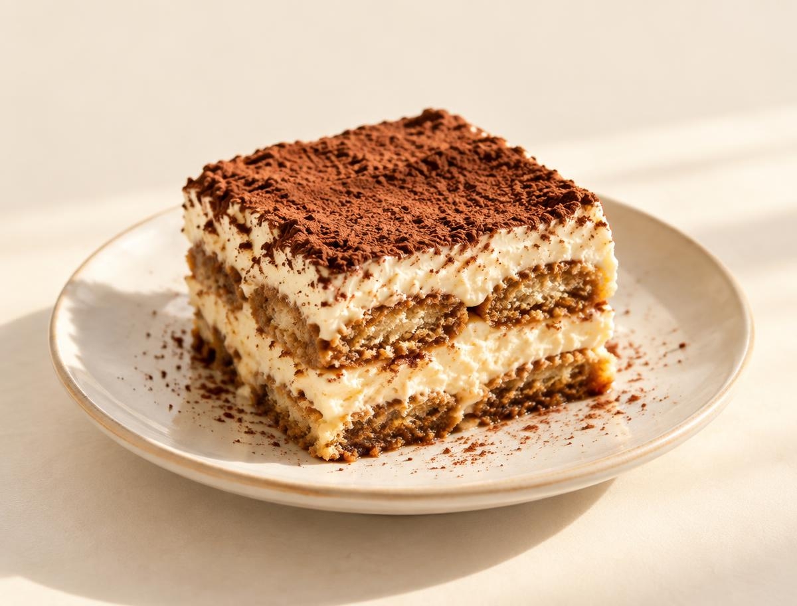
Tiramisù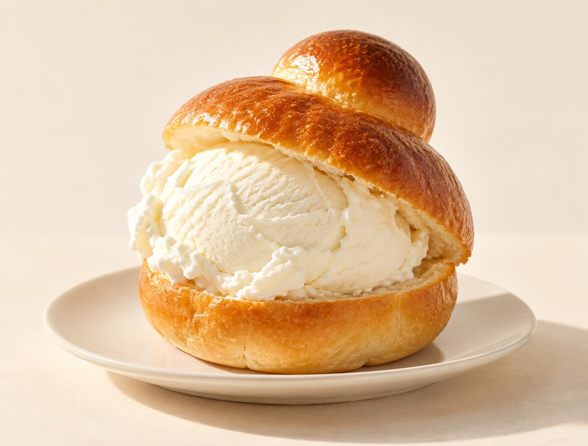
Brioche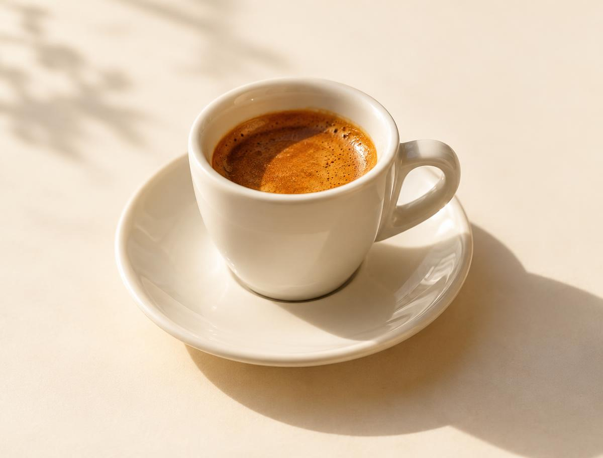
Caffè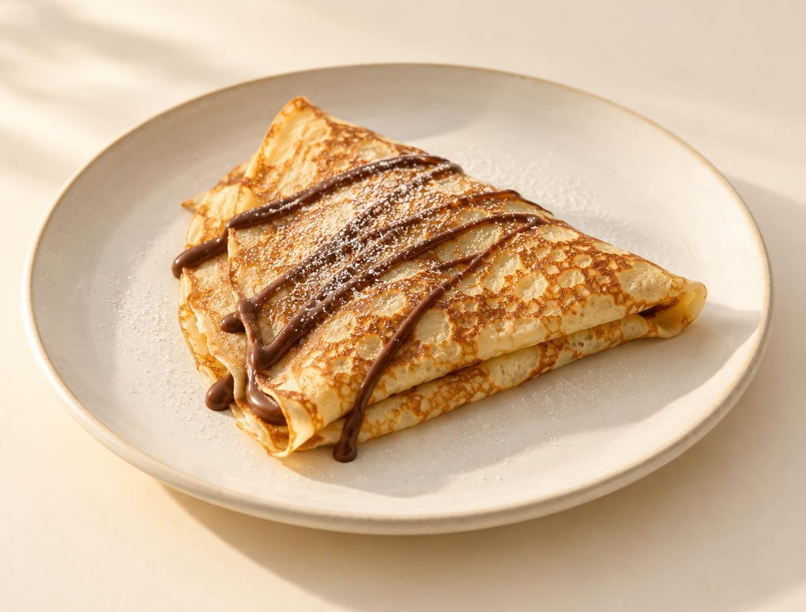
Crêpes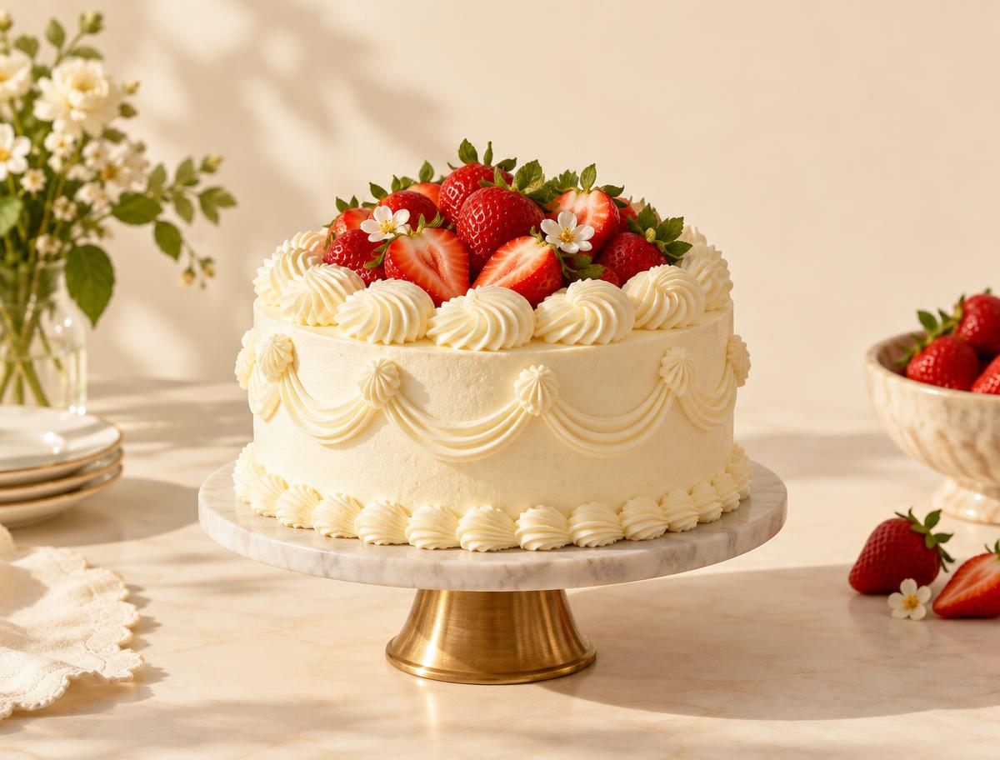
Torte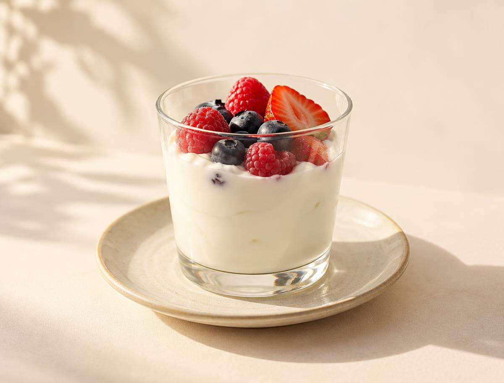
YogurtFirenze · dal 2017
Novoli
Via della Torre degli Agli 71
50127 Firenze
Centro
Via del Corso 66r
Firenze